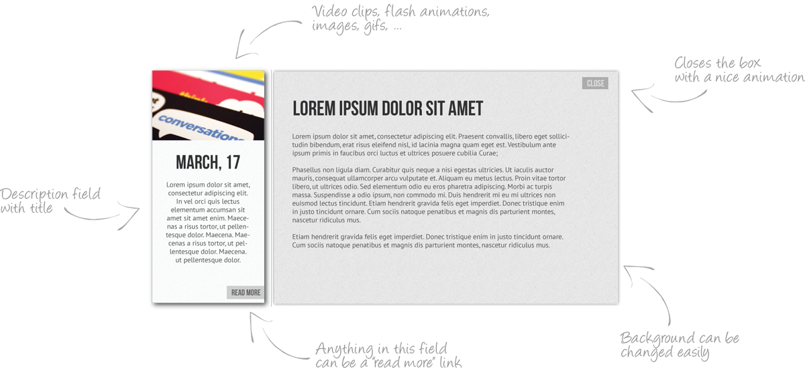

Content timeline is powerful and lightweight jQuery plugin, best for displaying date organised content. It is fully customizable, and easily integrateable with any js script, video, flesh etc. Well structured code, and wide ranged API functions make it simple to get started and flexible for customization.
All you need to do is call:
$('#myTimeline').timeline();And format elements like this:
<div class="timelineLoader">
<img src="images/timeline/loadingAnimation.gif" /><!-- loader GIF -->
</div>
<div id="myTimeline">
<div class="item" data-name="name" data-id="26/08/2012" data-description="Some description...">
... Shorter version of content ...
</div>
<div class="item_open" data-id="26/08/2012">
... Detailed version of content ...
</div>
... or if you want to load open item content with ajax ...
<div class="item" data-id="26/08/2012" data-description="Some description...">
... Shorter version of content ...
</div>
<div class="item_open" data-id="26/08/2012" data-access="url_of_full_content">
<div class="item_open_content">
<img class="ajaxloader" src="images/timeline/loadingAnimation.gif" alt="" />
</div>
</div>
.
.
</div>
* Can be ID or Class of element.
* Default classes, can be changed on function call.
* If set changes name of timeline node for current item.
* Categorizing parameter, in this case date of element (DD/MM/YYYY format).
* Optional, short description.
<!--- line --->
<div class="timeline_line">
<div id="t_line_left"></div><div id="t_line_right"></div>
<div class="t_line_holder">
<div class="t_line_wrapper">
<div class="t_line_view">
<h3 class="t_line_year">2012</h3>
<div class="t_line_m">
<h4 class="t_line_month">May</h4>
<a href="#04/06/2012" class="t_line_node">4<span class="t_node_desc">Some item description...</span></a>
<a href="#12/06/2012" class="t_line_node">12<span class="t_node_desc">Some item description...</span></a>
.
.
.
</div>
<div class="t_line_m right">
<h4 class="t_line_month">June</h4>
<a href="#04/06/2012" class="t_line_node">4<span class="t_node_desc">Some item description...</span></a>
<a href="#12/06/2012" class="t_line_node">12<span class="t_node_desc">Some item description...</span></a>
.
.
.
</div>
</div>
<div class="t_line_view">
.
.
.
</div>
</div>
</div>
</div>
</div>
<!--- items --->
<div class="timeline_items">
<div class="item" data-id="26/08/2012" data-description="Some description...">
... Shorter version of content ...
</div>
<div class="item_open" data-id="26/08/2012">
... Detailed version of content ...
</div>
.
.
.
</div>
<!--- controles --->
<div class="t_controles">
<div class="t_left"></div>
<div class="t_right"></div>
</div>
$('#myTimeline').timeline({
name : value
});
List of available parameters:
| Name | Default | Description |
|---|---|---|
| itemClass | '.item' | Class used for items |
| itemOpenClass | '.item_open' | Class used for item details |
| openTriggerClass | '.item' | Class of read more element (default uses whole '.item' to trigger open event), if you change it have in mind that element you use it on should have 'data-id' with value same as parrent '.item'. |
| closeText | 'Close' | Text of 'close' button in open item (can be left blank) |
| itemMargin | 10 | Spacing between items |
| scrollSpeed | 500 | Transition speed between two elements. |
| startItem | 'last' | Timeline start item 'data-id' ('last' or 'first' can be used insted). |
| easing | 'easeOutSine' | JQuery.easing function for animations |
| hideTimeline | false | Remove timeline |
| hideControles | false | Remove left/right controles |
| swipeOn | true | Turn on swipe moving function |
| closeItemOnTransition | false | Doesn't open item after transition (if true) |
| ajaxFailMessage | 'Ajax request has failed.' | Message shown when content of opened item fails to load |
Timeline categorising parameters:
| Name | Default |
|---|---|
| categories | ['January', 'February', 'March', 'April', 'May', 'June', 'July', 'August', 'September', 'October', 'November', 'December'] |
| nuberOfSegments | [31, 29, 31, 30, 31, 30, 31, 31, 30, 31, 30, 31] |
| yearsOn | true |
| Name | Description |
|---|---|
| $.timeline('init') | Initialises timeline |
| $.timeline('destroy') | Clears timeline data |
| $.timeline('left') | Moves one left by one element |
| $.timeline('right') | Moves right by one element |
| $.timeline('open', id) | Opens element with 'data-id' = id |
| $.timeline('close', id) | Closes element with 'data-id' = id |
| $.timeline('goTo', id) | Goes to element width 'data-id' = id |
Methods binded on keyboard events:
| Event | Method |
|---|---|
| On KeyPress (left) | trigger $.timeline('left') |
| On KeyPress (right) | trigger $.timeline('right') |
| Name | Description |
|---|---|
| 'init.timeline' | Triggered when timeline is initialised |
| 'scrollStart.timeline' | Triggered when item move animation starts |
| 'scrollEnd.timeline' | Triggered when item move animation ends |
| 'itemOpen.timeline' | Triggered on click to open item |
| 'itemClose.timeline' | Triggered on click to close item |
Required: jQuery 1.3+
Extra: Use jQuery Easing for additional easing options.